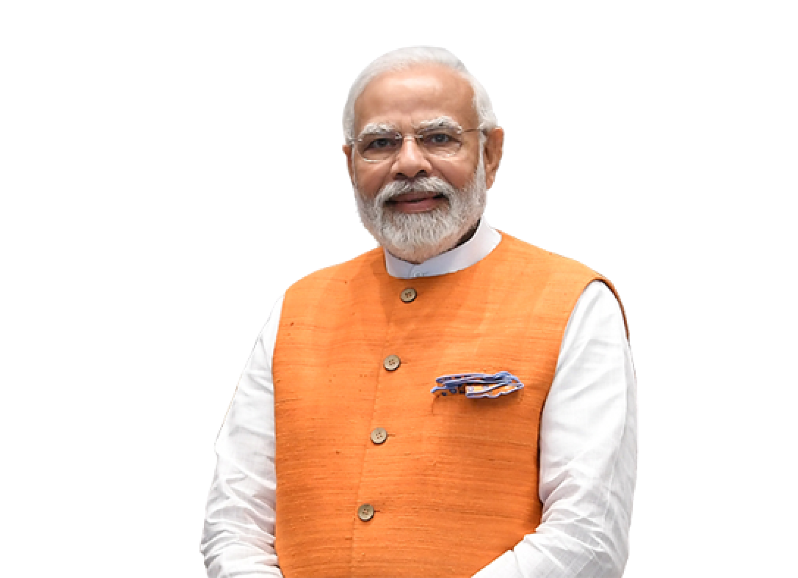
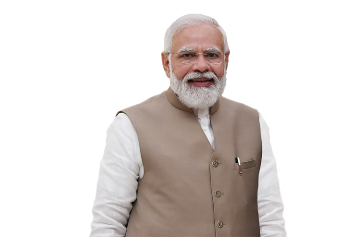
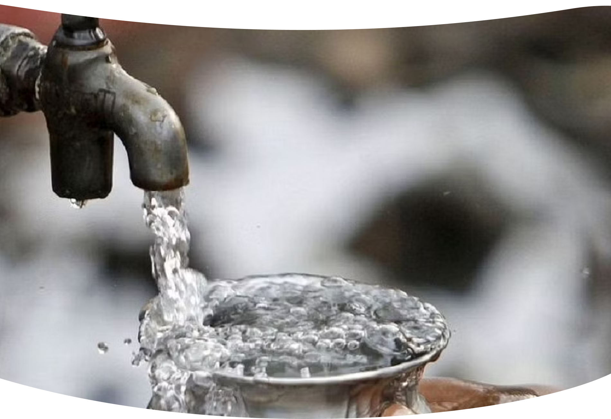
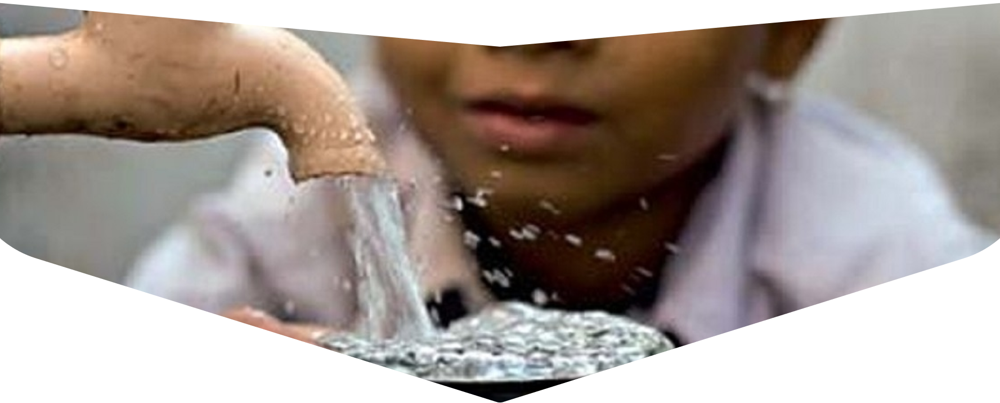
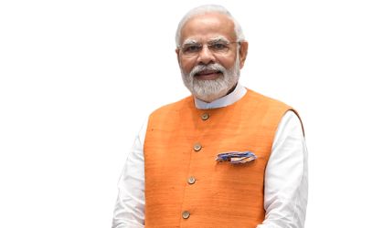
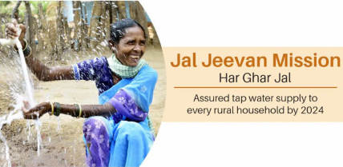
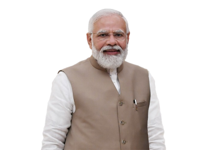

“Jal Jeevan Mission is giving new impetus to the development of the country today”
~ PM NARENDRA MODI

1.
WATER SUPPLY
Piped water supply to all rural household by 2024.
3. SCHEMES
Will converge with other central and state government schemes.
JJM VISION
2. SYSTEM
Integrated demand and management of water at local level.
4. LOCAL INFRASTRUCTURE
Creation of Local Infrastructure for rainwater harvesting ground water recharge.
“I declare from the Red Fort today that in the days to come, we will take forward the Jal Jeevan
Mission. The central and the state governments will jointly work on this Jal Jeevan Mission.
We have promised to spend more than Rs. 3.50 Lakh Crore on this mission in the coming years”
~ PM NARENDRA MODI

JAL JEEVAN MISSION
Launched In 2019, it envisages supply of 55 litres of water per person per day to every rural household
through Functional Household Tap Connections (FHTC) by 2024 JJM looks to create a jan andolan for water,
thereby making it everyone's priority, it comes under Jal Shakti Ministry

VISION
States/UTS in planning of participatory rural water supply strategy for ensuring potable drinking water
security on long-term basis to every rural household and public institution, viz. GP building, School,
Anganwadi centre, Health centre, wellness centres, etc.
States/ UTs for creation of water supply infrastructure so that every rural household has Functional Tap
Connection (FHTC) by 2024 and water in adequate quantity of prescribed quality is made available on regular
basis.
Capacity building of the stakeholders and create awareness in community on significance of water for
improvement in quality of lifein making provision and mobilization of financial assistance to States/ UTs
for implementation of the mission.

OBJECTIVES
To prioritize provision of FHTCs in qualityaffected areas, villages in drought prone and
desert areas, Sansad Adarsh Gram Yojana (SAGY) villages, etc and To provide
functional tap connection to Schools, Anganwadi centres, GP buildings, Health centres, wellness centres
and community buildings.
To monitor functionality of tap connections.
To promote and ensure voluntary ownership among local community by way of contribution in cash, kind and/
or labour and voluntary labour (shramdaan)
To assist in ensuring sustainability of water supply system, ie water source, water supply
infrastructure, and funds for regular 0&M
To empower and develop human resource in the sector such that the demands of construction, plumbing,
electrical, water quality management, water treatment, catchment protection, O&M, etc. are taken care of
in short and long term
To bring awareness on various aspects and significance of safe drinking water and
involvement of stakeholders in manner that make water everyone's business
“Jal Jeevan Mission is giving new impetus to the development
of the country today” ~ PM NARENDRA MODI

Every rural household has drinking water supply in adequate
quantity of prescribed quality on regular and long-term basis
at affordable service delivery charges leading to improvement
in living standards of rural communities.

“I declare from the Red Fort today that in the days to come,
we will take forward the Jal Jeevan Mission. The central and
the state governments will jointly work on this Jal Jeevan
Mission. We have promised to spend more than Rs. 3.50 Lakh
Crore on this mission in the coming years”
~ PM NARENDRA MODI

JJM VISION
1. WATER SUPPLY
Piped water supply to all rural households by 2024
JJM VISION
2. SYSTEM
Integrated demand and management of water at local level
JJM VISION
3. SCHEMES
Will converge with other central and state goverment schemes
JJM VISION
4. LOCAL INFRASTRUCTURE
Creation of Local infrastructure for rainwater harvesting
ground water recharge.